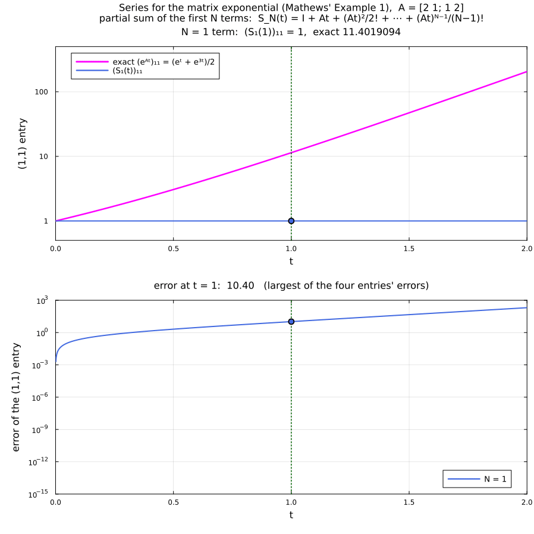
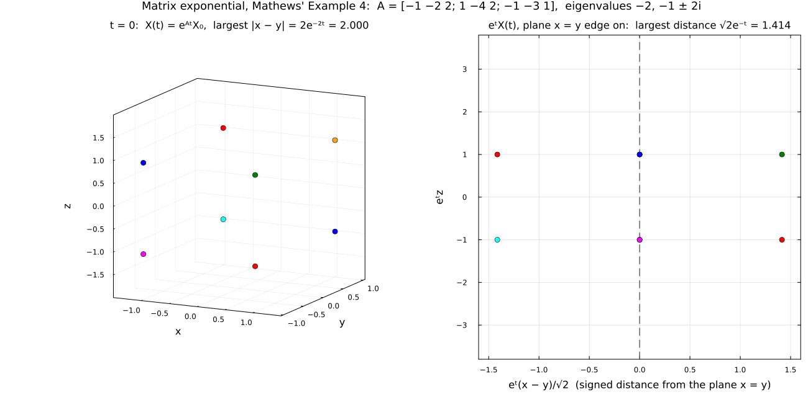

Matrix Exponential
Source inspiration: (Mathew 2000-2019).
Description
A homogeneous linear system of differential equations with constant coefficients, \(\mathbf{X}'(t) = \mathbf{A}\,\mathbf{X}(t)\), with \(\mathbf{A}\) an \(n \times n\) matrix and the initial condition \(\mathbf{X}(0) = \mathbf{X}_0\), has the solution
\[ \mathbf{X}(t) = e^{\mathbf{A}t}\,\mathbf{X}_0, \qquad e^{\mathbf{A}t} = \sum_{n=0}^{\infty} \frac{1}{n!}\,(\mathbf{A}t)^n = \mathbf{I} + \mathbf{A}t + \frac{1}{2!}\mathbf{A}^2 t^2 + \frac{1}{3!}\mathbf{A}^3 t^3 + \cdots . \]
The matrix \(e^{\mathbf{A}t}\) is the matrix exponential. Mathews builds it from the eigenvalues and eigenvectors of \(\mathbf{A}\): when \(\mathbf{A}\) has a full set of \(n\) linearly independent eigenvectors, collected as the columns of a matrix \(\mathbf{P}\), with the eigenvalues \(\lambda_1, \ldots, \lambda_n\) on the diagonal of \(\mathbf{D}\), then \(\mathbf{A} = \mathbf{P}\mathbf{D}\mathbf{P}^{-1}\), every power is \(\mathbf{A}^n = \mathbf{P}\mathbf{D}^n\mathbf{P}^{-1}\), and the series sums to
\[ e^{\mathbf{A}t} = \mathbf{P}\,\begin{pmatrix} e^{\lambda_1 t} & & \\ & \ddots & \\ & & e^{\lambda_n t} \end{pmatrix}\mathbf{P}^{-1}. \]
The same matrix is \(\boldsymbol{\Phi}(t)\boldsymbol{\Phi}(0)^{-1}\) for any fundamental matrix solution \(\boldsymbol{\Phi}(t)\), which is how Mathews introduces it. Example 1 sums the series for a \(2 \times 2\) matrix term by term and compares the partial sums with the closed form; Examples 2 to 6 find \(e^{\mathbf{A}t}\) and the general solution for systems of two, three and four equations, with real and with complex eigenvalues. Every matrix, solution and number below has been recomputed symbolically and checked against an independent numerical matrix exponential, and the solutions of Examples 3 to 6 also against a numerical solution of the differential equations.
Animations
The first animation sums the series (9) for Example 1 one term at a time. The other three trace Mathews’ graphs of Examples 3, 4 and 5 in time, from his starting points and in his windows, colours and view point. Beside each graph they show the same solutions with the slowest decay removed, \(e^{t}\mathbf{X}(t)\), which reveals what the matrix exponential does besides shrinking the solution: a rotation in Example 3, a flattening into a plane in Example 4 and a turn towards one eigenvector line in Example 5.
Mathews’ module links no animation, and his animation archive has none for this module, so all four animations are new, with no Mathews original. Part (a) of Example 1, \(e^{\mathbf{A}}\), is the value at \(t = 1\) in Case 1. Example 2 is not animated: the archive has lost its graphs and the initial conditions Mathews plotted, and its stable node behaves in the plane as Example 5’s does in space. Example 6 is not animated either; Mathews’ graphs of its four components against \(t\) are static plots, described under the example.
Julia source scripts that generated these animations are linked under each case.
Case 1 — The partial sums \(\mathbf{S}_N(t)\) of Example 1, \(N = 1\) to \(20\) terms, on \(0 \le t \le 2\)
Behavior: Each frame adds one term, \((\mathbf{A}t)^{N-1}/(N-1)!\), to the partial sum \(\mathbf{S}_N(t)\). The top panel draws its diagonal entry against the exact entry \((e^{\mathbf{A}t})_{1,1} = \tfrac12(e^{t} + e^{3t})\), and the bottom panel the error of that entry, which is the largest of the four entries’ errors, both on logarithmic scales. Every term after the first, \(\mathbf{I}\), has positive entries, so for \(t > 0\) each partial sum lies below the exact entry, each new term lowers the error at every \(t\), and every error curve rises with \(t\). At \(t = 1\) (dotted line, part (a)) the error falls from \(10.40\) for \(\mathbf{S}_1 = \mathbf{I}\) to \(8.350 \times 10^{-10}\) for \(\mathbf{S}_{20}\), passing through the values in the table of Example 1 at \(N = 5, 10, 15, 20\). At \(t = 2\) the twenty-term sum is still in error by \(1.045 \times 10^{-3}\), because the faster exponential \(e^{3t}\) sets the pace. Errors below \(10^{-15}\) are drawn leaving the bottom of the panel. Mathews draws no graph for this example, so the window is chosen here; it is the range of the error table of Example 1.

Case 2 — Example 3, \(x' = -x - 2y\), \(y' = 2x - y\): Mathews’ sixteen solutions for \(0 \le t \le 3.5\)
Behavior: On the left is Mathews’ graph traced in time: the sixteen solutions \(\mathbf{X}(t) = e^{\mathbf{A}t}\mathbf{X}_0\) from his starting points \(2\bigl(\cos\tfrac{k\pi}{8}, \sin\tfrac{k\pi}{8}\bigr)\) (brown dots), in his window \([-2, 2]^2\) and his colours, one frame every \(0.05\) in \(t\). Because \(e^{\mathbf{A}t}\) is \(e^{-t}\) times a rotation by \(2t\), the sixteen current points always lie on one circle (dashed), of radius \(2e^{-t}\), which shrinks from \(2\) to \(0.06039\) at \(t = 3.5\) while the points turn counterclockwise; each solution spirals in to the origin. On the right are the same points with the factor \(e^{-t}\) removed. Then \(e^{t}\mathbf{X}(t)\) is the starting point rotated by \(2t\), so the points stay on the circle of radius \(2\) and turn together as a rigid wheel, through \(7\) radians (about \(1.114\) turns) by \(t = 3.5\). The red arc and spoke follow the solution that starts at \((2, 0)\) (larger dot).

Case 3 — Example 4: Mathews’ eight solutions from the corners of the cube for \(0 \le t \le 4\)
Behavior: On the left is Mathews’ graph traced in time: the eight solutions from the corners \((\pm 1, \pm 1, \pm 1)\) (brown dots), seen from his view point \((2, -4, 1)\), in his colours (blue and red each used twice, as in his graph), one frame every \(0.05\) in \(t\), his sampling step. They spiral in to the origin. The box is a little larger than the extent of the curves given under Example 4, with Mathews’ tick marks. On the right the same solutions, with the decay \(e^{-t}\) of the spiralling part removed, are seen edge on to the plane \(x = y\), which appears as the dashed vertical line. The horizontal coordinate is the signed distance \(e^{t}(x - y)/\sqrt2\) from that plane and the vertical one is \(e^{t}z\). Since \(x - y = e^{-2t}(x_0 - y_0)\), that distance is \(e^{-t}(x_0 - y_0)/\sqrt2\), and its largest value over the corners falls from \(\sqrt2 = 1.414\) to \(\sqrt2\,e^{-4} = 0.02590\) at \(t = 4\): every solution flattens into the plane. The four corners with \(x_0 = y_0\) (orange, magenta and the two blue curves) start in the plane and stay in it, moving only along the vertical line; at \(t = 0\) they coincide in pairs in this view. Within the plane, \(e^{t}\mathbf{X}(t)\) approaches an ellipse that it goes round once every \(\pi\) units of time (\(\mathbf{A} + \mathbf{I}\) has the eigenvalues \(\pm 2i\) there), so its height \(e^{t}z\) keeps oscillating. The left title gives the largest \(|x - y|\) over the corners, \(2e^{-2t}\), which is \(0.0006709\) at \(t = 4\).

Case 4 — Example 5: Mathews’ eight solutions from the corners of the cube for \(0 \le t \le 5\)
Behavior: On the left is Mathews’ graph traced in time, as in Case 3 but for \(0 \le t \le 5\), in a box a little larger than the extent of the curves given under Example 5. The dashed line is the line through \((2, -2, -3)\), the eigenvector direction of the slowest eigenvalue \(-1\). No corner has \(x_0 - y_0 + z_0 = 0\), so every solution enters the origin tangent to that line. The title gives the largest angle between \(\mathbf{X}(t)\) and the line over the eight solutions: \(81.95^\circ\) at \(t = 0\) and \(0.6895^\circ\) at \(t = 5\). It does not fall steadily, rising for a while twice before \(t = 0.75\). On the right the slowest decay is removed: \(e^{t}\mathbf{X}(t)\) is \((x_0 - y_0 + z_0)(2, -2, -3)^T\) plus parts that decay like \(e^{-t}\) and \(e^{-2t}\), so it tends to the point \((x_0 - y_0 + z_0)(2, -2, -3)\) (black circles). Three corners go to \((2, -2, -3)\) and three to \((-2, 2, 3)\); the green curve from \((1, -1, 1)\) goes to \((6, -6, -9)\) and the cyan curve from \((-1, 1, -1)\) to \((-6, 6, 9)\). The title gives the largest distance from \(e^{t}\mathbf{X}(t)\) to its limit, which is smaller at every frame, from \(12.25\) at \(t = 0\) to \(0.1898\) at \(t = 5\).

The Fundamental Matrix Solution
For illustration take two equations,
\[ x'(t) = a\,x(t) + b\,y(t), \qquad y'(t) = c\,x(t) + d\,y(t), \]
and write them in vector and matrix form, \(\mathbf{X}'(t) = \mathbf{A}\,\mathbf{X}(t)\) with
\[ \mathbf{X}(t) = \begin{pmatrix} x(t) \\ y(t) \end{pmatrix}, \qquad \mathbf{A} = \begin{pmatrix} a & b \\ c & d \end{pmatrix}. \]
Denote the eigenpairs of \(\mathbf{A}\) by \(\lambda_1, \mathbf{v}_1 = (v_{1,1}, v_{2,1})^T\) and \(\lambda_2, \mathbf{v}_2 = (v_{1,2}, v_{2,2})^T\).
Assumption. The two eigenvectors \(\mathbf{v}_1, \mathbf{v}_2\) are linearly independent. Then two linearly independent solutions of \(\mathbf{X}' = \mathbf{A}\mathbf{X}\) are
\[ \mathbf{X}_1(t) = \mathbf{v}_1 e^{\lambda_1 t}, \qquad \mathbf{X}_2(t) = \mathbf{v}_2 e^{\lambda_2 t}, \]
since \(\mathbf{X}_j' = \lambda_j \mathbf{v}_j e^{\lambda_j t} = \mathbf{A}\mathbf{v}_j e^{\lambda_j t} = \mathbf{A}\mathbf{X}_j\).
The fundamental matrix solution \(\boldsymbol{\Phi}(t)\) is the matrix whose columns are the two solutions \(\mathbf{X}_1(t)\) and \(\mathbf{X}_2(t)\):
\[ \boldsymbol{\Phi}(t) = \bigl[\mathbf{v}_1 e^{\lambda_1 t},\ \mathbf{v}_2 e^{\lambda_2 t}\bigr] = \begin{pmatrix} v_{1,1} e^{\lambda_1 t} & v_{1,2} e^{\lambda_2 t} \\ v_{2,1} e^{\lambda_1 t} & v_{2,2} e^{\lambda_2 t} \end{pmatrix}. \tag{1} \]
The general solution of \(\mathbf{X}' = \mathbf{A}\mathbf{X}\) is the linear combination
\[ \mathbf{X}(t) = c_1 \mathbf{v}_1 e^{\lambda_1 t} + c_2 \mathbf{v}_2 e^{\lambda_2 t}, \tag{2} \]
which in matrix form is \(\mathbf{X}(t) = \boldsymbol{\Phi}(t)\,\mathbf{C}\) with \(\mathbf{C} = (c_1, c_2)^T\). With the notation
\[ \mathbf{P} = [\mathbf{v}_1, \mathbf{v}_2] = \begin{pmatrix} v_{1,1} & v_{1,2} \\ v_{2,1} & v_{2,2} \end{pmatrix}, \qquad \mathbf{E}(t) = \begin{pmatrix} e^{\lambda_1 t} & 0 \\ 0 & e^{\lambda_2 t} \end{pmatrix}, \]
the fundamental matrix solution is
\[ \boldsymbol{\Phi}(t) = \mathbf{P}\,\mathbf{E}(t). \tag{3} \]
The initial condition
To have \(\mathbf{X}(0) = \mathbf{X}_0 = (x_0, y_0)^T\), set \(t = 0\) in \(\mathbf{X}(t) = \boldsymbol{\Phi}(t)\mathbf{C}\): this gives \(\mathbf{X}_0 = \boldsymbol{\Phi}(0)\,\mathbf{C}\), so \(\mathbf{C} = \boldsymbol{\Phi}(0)^{-1}\mathbf{X}_0\), and the solution with the prescribed initial condition is
\[ \mathbf{X}(t) = \boldsymbol{\Phi}(t)\,\boldsymbol{\Phi}(0)^{-1}\,\mathbf{X}_0. \]
The matrix \(\boldsymbol{\Phi}(t)\boldsymbol{\Phi}(0)^{-1}\) equals the identity \(\mathbf{I}\) at \(t = 0\). This leads to the following definition.
If \(\boldsymbol{\Phi}(t)\) is a fundamental matrix solution of \(\mathbf{X}' = \mathbf{A}\mathbf{X}\), the matrix exponential is
\[ e^{\mathbf{A}t} = \boldsymbol{\Phi}(t)\,\boldsymbol{\Phi}(0)^{-1}. \tag{4} \]
Because \(\boldsymbol{\Phi}(0) = \mathbf{P}\) in (3), this is
\[ e^{\mathbf{A}t} = \mathbf{P}\,\mathbf{E}(t)\,\mathbf{P}^{-1} = \begin{pmatrix} v_{1,1} & v_{1,2} \\ v_{2,1} & v_{2,2} \end{pmatrix} \begin{pmatrix} e^{\lambda_1 t} & 0 \\ 0 & e^{\lambda_2 t} \end{pmatrix} \begin{pmatrix} v_{1,1} & v_{1,2} \\ v_{2,1} & v_{2,2} \end{pmatrix}^{-1}. \tag{5} \]
The definition does not depend on which fundamental matrix is used: any other one is \(\boldsymbol{\Psi}(t) = \boldsymbol{\Phi}(t)\mathbf{K}\) for a constant invertible matrix \(\mathbf{K}\), and \(\boldsymbol{\Psi}(t)\boldsymbol{\Psi}(0)^{-1} = \boldsymbol{\Phi}(t)\mathbf{K}\mathbf{K}^{-1}\boldsymbol{\Phi}(0)^{-1}\). In general, \(e^{\mathbf{A}t}\) is the fundamental matrix solution that equals \(\mathbf{I}\) at \(t = 0\): it satisfies \(\tfrac{d}{dt}e^{\mathbf{A}t} = \mathbf{A}\,e^{\mathbf{A}t}\) and \(e^{\mathbf{A}\cdot 0} = \mathbf{I}\).
For a system of any size, the solution of \(\mathbf{X}' = \mathbf{A}\mathbf{X}\) with \(\mathbf{X}(0) = \mathbf{X}_0\) is
\[ \mathbf{X}(t) = e^{\mathbf{A}t}\,\mathbf{X}_0 . \tag{6} \]
For three equations, \(\mathbf{X}_0 = (x_0, y_0, z_0)^T\) and the columns of \(e^{\mathbf{A}t}\) are the solutions that start at \((1, 0, 0)^T\), \((0, 1, 0)^T\) and \((0, 0, 1)^T\).
Diagonalization and Powers of a Matrix
Let \(\mathbf{A}\) be an \(n \times n\) matrix with a full set of eigenpairs \(\lambda_j, \mathbf{v}_j\) for \(j = 1, 2, \ldots, n\), the eigenvectors linearly independent. Let \(\mathbf{D} = \operatorname{diag}(\lambda_1, \ldots, \lambda_n)\) and let \(\mathbf{P} = [\mathbf{v}_1, \mathbf{v}_2, \ldots, \mathbf{v}_n]\) be the matrix whose columns are the eigenvectors. Then the eigen decomposition of \(\mathbf{A}\) is
\[ \mathbf{A} = \mathbf{P}\,\mathbf{D}\,\mathbf{P}^{-1}. \tag{7} \]
The theorem follows from \(\mathbf{A}\mathbf{P} = [\lambda_1\mathbf{v}_1, \ldots, \lambda_n\mathbf{v}_n] = \mathbf{P}\mathbf{D}\), with \(\mathbf{P}\) invertible because its columns are independent.
Matrix powers
How are higher powers of a matrix computed? For \(\mathbf{A} = \begin{pmatrix} a & b \\ c & d \end{pmatrix}\),
\[ \mathbf{A}^2 = \begin{pmatrix} a^2 + bc & ab + bd \\ ac + cd & bc + d^2 \end{pmatrix}, \qquad \mathbf{A}^3 = \begin{pmatrix} a^3 + 2abc + bcd & a^2 b + b^2 c + abd + bd^2 \\ a^2 c + bc^2 + acd + cd^2 & abc + 2bcd + d^3 \end{pmatrix}, \]
and the entries of higher powers soon become unmanageable; Mathews lets Mathematica print a few more, “just for fun”. With an eigen decomposition the powers are easy, because the inner factors \(\mathbf{P}^{-1}\mathbf{P}\) cancel:
\[ \mathbf{A}^2 = \mathbf{P}\mathbf{D}\mathbf{P}^{-1}\mathbf{P}\mathbf{D}\mathbf{P}^{-1} = \mathbf{P}\mathbf{D}^2\mathbf{P}^{-1}, \qquad \mathbf{A}^3 = \mathbf{P}\mathbf{D}^2\mathbf{P}^{-1}\mathbf{P}\mathbf{D}\mathbf{P}^{-1} = \mathbf{P}\mathbf{D}^3\mathbf{P}^{-1}, \]
and in general
\[ \mathbf{A}^n = \mathbf{P}\,\mathbf{D}^n\,\mathbf{P}^{-1}, \qquad \mathbf{D}^n = \operatorname{diag}(\lambda_1^n, \ldots, \lambda_n^n). \tag{8} \]
For a \(2 \times 2\) matrix this reads
\[ \mathbf{A}^n = \begin{pmatrix} v_{1,1} & v_{1,2} \\ v_{2,1} & v_{2,2} \end{pmatrix} \begin{pmatrix} \lambda_1^n & 0 \\ 0 & \lambda_2^n \end{pmatrix} \begin{pmatrix} v_{1,1} & v_{1,2} \\ v_{2,1} & v_{2,2} \end{pmatrix}^{-1}. \]
The Series Representation
The solution of \(\boldsymbol{\Phi}'(t) = \mathbf{A}\,\boldsymbol{\Phi}(t)\) with \(\boldsymbol{\Phi}(0) = \mathbf{I}\) is given by the series
\[ \boldsymbol{\Phi}(t) = e^{\mathbf{A}t} = \sum_{n=0}^{\infty} \frac{1}{n!}\,(\mathbf{A}t)^n = \mathbf{I} + \mathbf{A}t + \frac{1}{2!}\mathbf{A}^2 t^2 + \frac{1}{3!}\mathbf{A}^3 t^3 + \cdots + \frac{1}{n!}\mathbf{A}^n t^n + \cdots . \tag{9} \]
If \(\mathbf{A} = \mathbf{P}\mathbf{D}\mathbf{P}^{-1}\), then by (8) the series becomes
\[ e^{\mathbf{A}t} = \mathbf{P}\left(\sum_{n=0}^{\infty} \frac{1}{n!}\,\mathbf{D}^n t^n\right)\mathbf{P}^{-1} = \mathbf{P}\begin{pmatrix} e^{\lambda_1 t} & & \\ & \ddots & \\ & & e^{\lambda_n t} \end{pmatrix}\mathbf{P}^{-1}, \tag{10} \]
because each diagonal entry is the scalar series \(\sum_n (\lambda_j t)^n/n! = e^{\lambda_j t}\). This agrees with (5).
The series (9) converges for every square matrix \(\mathbf{A}\) and every real or complex \(t\), whether or not \(\mathbf{A}\) has a full set of eigenvectors (a general result: in any operator norm, the \(n\)-th term is at most \((\lVert\mathbf{A}\rVert\,|t|)^n/n!\), the \(n\)-th term of the convergent scalar series for \(e^{\lVert\mathbf{A}\rVert |t|}\)). Differentiating it term by term gives \(\tfrac{d}{dt}e^{\mathbf{A}t} = \mathbf{A}e^{\mathbf{A}t}\), which is why (9) solves the differential equation.
Formulas (5) and (10) need \(n\) linearly independent eigenvectors. When an eigenvalue has fewer independent eigenvectors than its multiplicity, there is no invertible \(\mathbf{P}\), and \(e^{\mathbf{A}t}\) then contains terms such as \(t\,e^{\lambda t}\); the series (9) still defines it. Mathews remarks that Mathematica’s built-in MatrixExp handles this case too. All six examples below have a full set of eigenvectors.
A real matrix can have complex eigenvalues (Examples 3 and 4). They come in conjugate pairs \(\alpha \pm i\beta\) with conjugate eigenvectors, so \(\mathbf{P}\) and \(\mathbf{E}(t)\) are complex, but the product (10) is real, and Euler’s formula \(e^{(\alpha \pm i\beta)t} = e^{\alpha t}(\cos\beta t \pm i \sin\beta t)\) turns it into exponentials times cosines and sines.
Example 1 — Summing the series for a \(2 \times 2\) matrix
Consider the matrix
\[ \mathbf{A} = \begin{pmatrix} 2 & 1 \\ 1 & 2 \end{pmatrix}. \]
- Find \(\boldsymbol{\Phi} = e^{\mathbf{A}}\). (b) Find \(\boldsymbol{\Phi}(t) = e^{\mathbf{A}t}\).
Mathews answers both parts in the same way: he computes the first few powers, finds the general power from the eigen decomposition, sums the series term by term, recognises each entry as a sum of exponential series, and compares the result with Mathematica’s MatrixExp. The archive has lost the output images of part (a), so the partial sums printed for (a) below are this page’s own computation; those for (b) agree with Mathews’ printed output.
Step 1 (powers): the first five powers of \(\mathbf{A}\) are
\[ \mathbf{A} = \begin{pmatrix} 2 & 1 \\ 1 & 2 \end{pmatrix}, \quad \mathbf{A}^2 = \begin{pmatrix} 5 & 4 \\ 4 & 5 \end{pmatrix}, \quad \mathbf{A}^3 = \begin{pmatrix} 14 & 13 \\ 13 & 14 \end{pmatrix}, \quad \mathbf{A}^4 = \begin{pmatrix} 41 & 40 \\ 40 & 41 \end{pmatrix}, \quad \mathbf{A}^5 = \begin{pmatrix} 122 & 121 \\ 121 & 122 \end{pmatrix}. \]
Step 2 (eigen decomposition): the eigenvalues are \(\lambda_1 = 1\) and \(\lambda_2 = 3\), with eigenvectors \(\mathbf{v}_1 = (-1, 1)^T\) and \(\mathbf{v}_2 = (1, 1)^T\), so
\[ \mathbf{P} = \begin{pmatrix} -1 & 1 \\ 1 & 1 \end{pmatrix}, \qquad \mathbf{D} = \begin{pmatrix} 1 & 0 \\ 0 & 3 \end{pmatrix}, \qquad \mathbf{P}^{-1} = \begin{pmatrix} -\tfrac12 & \tfrac12 \\[1mm] \tfrac12 & \tfrac12 \end{pmatrix}. \]
Step 3 (general term): by (8),
\[ \mathbf{A}^n t^n = \mathbf{P}\begin{pmatrix} 1 & 0 \\ 0 & 3^n \end{pmatrix}\mathbf{P}^{-1} t^n = t^n \begin{pmatrix} \tfrac12 + \tfrac{3^n}{2} & -\tfrac12 + \tfrac{3^n}{2} \\[1mm] -\tfrac12 + \tfrac{3^n}{2} & \tfrac12 + \tfrac{3^n}{2} \end{pmatrix}, \]
which reproduces every power in Step 1 (for example \(n = 5\): \(\tfrac12(243 \pm 1) = 122, 121\)).
Step 4 (the series): by (9),
\[ e^{\mathbf{A}t} = \begin{pmatrix} 1 & 0 \\ 0 & 1 \end{pmatrix} + t\begin{pmatrix} \tfrac12 + \tfrac32 & -\tfrac12 + \tfrac32 \\[1mm] -\tfrac12 + \tfrac32 & \tfrac12 + \tfrac32 \end{pmatrix} + \frac{t^2}{2!}\begin{pmatrix} \tfrac12 + \tfrac{3^2}{2} & -\tfrac12 + \tfrac{3^2}{2} \\[1mm] -\tfrac12 + \tfrac{3^2}{2} & \tfrac12 + \tfrac{3^2}{2} \end{pmatrix} + \frac{t^3}{3!}\begin{pmatrix} \tfrac12 + \tfrac{3^3}{2} & -\tfrac12 + \tfrac{3^3}{2} \\[1mm] -\tfrac12 + \tfrac{3^3}{2} & \tfrac12 + \tfrac{3^3}{2} \end{pmatrix} + \cdots . \]
Write \(\mathbf{S}_N(t) = \sum_{n=0}^{N-1} (\mathbf{A}t)^n/n!\) for the sum of the first \(N\) terms. The sum of the first five terms is
\[ \mathbf{S}_5(t) = \begin{pmatrix} 1 + 2t + \tfrac52 t^2 + \tfrac73 t^3 + \tfrac{41}{24}t^4 & t + 2t^2 + \tfrac{13}{6}t^3 + \tfrac53 t^4 \\[1mm] t + 2t^2 + \tfrac{13}{6}t^3 + \tfrac53 t^4 & 1 + 2t + \tfrac52 t^2 + \tfrac73 t^3 + \tfrac{41}{24}t^4 \end{pmatrix}, \]
and the sum of the first ten terms adds, in the diagonal entries,
\[ \tfrac{61}{60}t^5 + \tfrac{73}{144}t^6 + \tfrac{547}{2520}t^7 + \tfrac{3281}{40320}t^8 + \tfrac{703}{25920}t^9, \]
and in the off-diagonal entries
\[ \tfrac{121}{120}t^5 + \tfrac{91}{180}t^6 + \tfrac{1093}{5040}t^7 + \tfrac{41}{504}t^8 + \tfrac{9841}{362880}t^9 , \]
as in Mathews’ output.
Step 5 (sum of the series): each entry is half the sum or difference of two exponential series,
\[ \sum_{n=0}^{\infty} \frac{t^n}{n!}\Bigl(\tfrac{3^n}{2} \pm \tfrac12\Bigr) = \tfrac12 e^{3t} \pm \tfrac12 e^{t}, \]
so
\[ \boxed{\ e^{\mathbf{A}t} = \frac12\begin{pmatrix} e^{t} + e^{3t} & e^{3t} - e^{t} \\ e^{3t} - e^{t} & e^{t} + e^{3t} \end{pmatrix} = \begin{pmatrix} \tfrac12 e^{t}(1 + e^{2t}) & \tfrac12 e^{t}(-1 + e^{2t}) \\[1mm] \tfrac12 e^{t}(-1 + e^{2t}) & \tfrac12 e^{t}(1 + e^{2t}) \end{pmatrix}\ } \]
which is part (b), in the form Mathews prints, and equals \(\mathbf{P}\operatorname{diag}(e^{t}, e^{3t})\mathbf{P}^{-1}\) from (10). Part (a) is \(t = 1\):
\[ \boxed{\ e^{\mathbf{A}} = \frac12\begin{pmatrix} e + e^3 & e^3 - e \\ e^3 - e & e + e^3 \end{pmatrix} \approx \begin{pmatrix} 11.4019 & 8.6836 \\ 8.6836 & 11.4019 \end{pmatrix}\ } \]
How fast the partial sums converge. At \(t = 1\) the partial sums \(\mathbf{S}_N(1)\) approach \(e^{\mathbf{A}}\) as follows. The error is the largest error over the four entries, which is the error in the diagonal entries.
| \(N\) terms | \((\mathbf{S}_N)_{1,1}\) | \((\mathbf{S}_N)_{1,2}\) | error |
|---|---|---|---|
| 5 | 9.5416667 | 6.8333333 | 1.860 |
| 10 | 11.3908372 | 8.6725557 | \(1.107 \times 10^{-2}\) |
| 15 | 11.4019026 | 8.6836208 | \(6.733 \times 10^{-6}\) |
| 20 | 11.4019094 | 8.6836275 | \(8.350 \times 10^{-10}\) |
| exact | 11.4019094 | 8.6836275 |
Every term of the series after the first, \(\mathbf{I}\), has positive entries here, so for \(t > 0\) each partial sum lies below the limit and the error of \(\mathbf{S}_N(t)\) grows with \(t\). The faster exponential \(e^{3t}\) sets the pace. The table below gives the error of the diagonal entry of \(\mathbf{S}_5(t)\) and \(\mathbf{S}_{10}(t)\), absolute and relative to \((e^{\mathbf{A}t})_{1,1}\), on \(0 \le t \le 2\):
| \(t\) | \(\mathbf{S}_5\) error | \(\mathbf{S}_5\) relative | \(\mathbf{S}_{10}\) error | \(\mathbf{S}_{10}\) relative |
|---|---|---|---|---|
| 0.25 | \(1.131 \times 10^{-3}\) | \(6.652 \times 10^{-4}\) | \(8.324 \times 10^{-9}\) | \(4.895 \times 10^{-9}\) |
| 0.5 | \(4.177 \times 10^{-2}\) | \(1.363 \times 10^{-2}\) | \(9.182 \times 10^{-6}\) | \(2.996 \times 10^{-6}\) |
| 1 | 1.860 | 0.1632 | \(1.107 \times 10^{-2}\) | \(9.711 \times 10^{-4}\) |
| 1.5 | 21.10 | 0.4466 | 0.7693 | \(1.628 \times 10^{-2}\) |
| 2 | 144.4 | 0.7030 | 16.93 | \(8.242 \times 10^{-2}\) |
The ten-term sum is accurate to about one part in a thousand at \(t = 1\) and to about eight per cent at \(t = 2\).
Verification: \(\mathbf{P}\mathbf{D}\mathbf{P}^{-1} = \mathbf{A}\); the boxed \(e^{\mathbf{A}t}\) satisfies \(\tfrac{d}{dt}e^{\mathbf{A}t} = \mathbf{A}e^{\mathbf{A}t}\) and equals \(\mathbf{I}\) at \(t = 0\) (checked symbolically); and it agrees with an independent numerical matrix exponential to a relative difference below \(10^{-15}\) for \(0 \le t \le 5\).
Systems of Two Equations
Example 2 — \(x' = -2x + y\), \(\ y' = x - 2y\)
Use the matrix exponential to find the general solution of
\[ x'(t) = -2x(t) + y(t), \qquad y'(t) = x(t) - 2y(t). \]
Step 1 (matrix form): \(\mathbf{X}' = \mathbf{A}\mathbf{X}\) with \(\mathbf{A} = \begin{pmatrix} -2 & 1 \\ 1 & -2 \end{pmatrix}\).
Step 2 (eigenpairs): the characteristic polynomial is \((\lambda + 1)(\lambda + 3)\), so
\[ \lambda_1 = -3,\ \mathbf{v}_1 = \begin{pmatrix} -1 \\ 1 \end{pmatrix}; \qquad \lambda_2 = -1,\ \mathbf{v}_2 = \begin{pmatrix} 1 \\ 1 \end{pmatrix}; \qquad \mathbf{P} = \begin{pmatrix} -1 & 1 \\ 1 & 1 \end{pmatrix}. \]
Step 3 (fundamental matrix): by (3),
\[ \boldsymbol{\Phi}(t) = \begin{pmatrix} -e^{-3t} & e^{-t} \\ e^{-3t} & e^{-t} \end{pmatrix}. \]
Step 4 (matrix exponential): by (4) or (5),
\[ \boxed{\ e^{\mathbf{A}t} = \boldsymbol{\Phi}(t)\boldsymbol{\Phi}(0)^{-1} = \frac12\begin{pmatrix} e^{-t} + e^{-3t} & e^{-t} - e^{-3t} \\ e^{-t} - e^{-3t} & e^{-t} + e^{-3t} \end{pmatrix}\ } \]
Step 5 (solution with \(\mathbf{X}(0) = (x_0, y_0)^T\)): by (6),
\[ \begin{aligned} x(t) &= \tfrac12(x_0 + y_0)\,e^{-t} + \tfrac12(x_0 - y_0)\,e^{-3t}, \\ y(t) &= \tfrac12(x_0 + y_0)\,e^{-t} - \tfrac12(x_0 - y_0)\,e^{-3t}. \end{aligned} \]
This matrix is the matrix of Example 1 shifted by \(-4\mathbf{I}\), so it has the same eigenvectors and \(e^{\mathbf{A}t}\) is \(e^{-4t}\) times the matrix exponential of Example 1. Both eigenvalues are negative, so every solution tends to the origin, which is a stable node. The component along \((1, -1)\) dies out like \(e^{-3t}\), faster than the component along \((1, 1)\), which decays like \(e^{-t}\); so every solution with \(x_0 + y_0 \ne 0\) approaches the origin tangent to the line \(y = x\).
The archive has lost the output images of this example (Mathews’ graphs and the initial conditions he plotted), so his plotting window for Example 2 is not known.
Verification: \(\mathbf{P}\mathbf{D}\mathbf{P}^{-1} = \mathbf{A}\); \(\tfrac{d}{dt}e^{\mathbf{A}t} - \mathbf{A}e^{\mathbf{A}t} = \mathbf{0}\) and \(e^{\mathbf{A}\cdot 0} = \mathbf{I}\) symbolically; agreement with an independent numerical matrix exponential to a relative difference of \(1.1 \times 10^{-16}\) for \(0 \le t \le 5\).
Example 3 — \(x' = -x - 2y\), \(\ y' = 2x - y\)
Use the matrix exponential to find the general solution of
\[ x'(t) = -x(t) - 2y(t), \qquad y'(t) = 2x(t) - y(t). \]
Step 1 (matrix form): \(\mathbf{A} = \begin{pmatrix} -1 & -2 \\ 2 & -1 \end{pmatrix}\).
Step 2 (eigenpairs): the characteristic polynomial is \(\lambda^2 + 2\lambda + 5\), with complex roots
\[ \lambda_1 = -1 + 2i,\ \mathbf{v}_1 = \begin{pmatrix} i \\ 1 \end{pmatrix}; \qquad \lambda_2 = -1 - 2i,\ \mathbf{v}_2 = \begin{pmatrix} -i \\ 1 \end{pmatrix}; \qquad \mathbf{P} = \begin{pmatrix} i & -i \\ 1 & 1 \end{pmatrix}. \]
Step 3 (fundamental matrix): \(\boldsymbol{\Phi}(t) = \begin{pmatrix} i\,e^{(-1+2i)t} & -i\,e^{(-1-2i)t} \\ e^{(-1+2i)t} & e^{(-1-2i)t} \end{pmatrix}\), a complex matrix.
Step 4 (matrix exponential): the product \(\boldsymbol{\Phi}(t)\boldsymbol{\Phi}(0)^{-1}\) is real, and with Euler’s formula
\[ \boxed{\ e^{\mathbf{A}t} = e^{-t}\begin{pmatrix} \cos 2t & -\sin 2t \\ \sin 2t & \cos 2t \end{pmatrix}\ } \]
Step 5 (solution with \(\mathbf{X}(0) = (x_0, y_0)^T\)):
\[ \begin{aligned} x(t) &= e^{-t}\cos(2t)\,x_0 - e^{-t}\sin(2t)\,y_0, \\ y(t) &= e^{-t}\sin(2t)\,x_0 + e^{-t}\cos(2t)\,y_0, \end{aligned} \]
which is Mathews’ printed solution. The matrix \(e^{\mathbf{A}t}\) is a rotation by the angle \(2t\), counterclockwise, times the factor \(e^{-t}\), so \(\lVert\mathbf{X}(t)\rVert = e^{-t}\lVert\mathbf{X}_0\rVert\) and every solution spirals in to the origin, a stable spiral point.
Mathews’ graph. Mathews plots sixteen solutions for \(0 \le t \le 3.5\) in the window \(-2 \le x \le 2\), \(-2 \le y \le 2\), starting at the sixteen points
\[ \mathbf{X}_0 = \Bigl(2\cos\tfrac{k\pi}{8},\ 2\sin\tfrac{k\pi}{8}\Bigr), \qquad k = 0, 1, \ldots, 15, \]
on the circle of radius \(2\), each marked with a dot. Over \(0 \le t \le 3.5\) each solution turns through \(7\) radians (about \(1.114\) turns) while its distance from the origin falls from \(2\) to \(2e^{-3.5} \approx 0.0604\).
Verification: \(\mathbf{P}\mathbf{D}\mathbf{P}^{-1} = \mathbf{A}\); the derivative and initial-value checks hold symbolically; agreement with an independent numerical matrix exponential to a relative difference below \(10^{-16}\) for \(0 \le t \le 5\); and a numerical solution of the differential equations from \((2, 0)\) matches Step 5 to \(4.7 \times 10^{-12}\) over \(0 \le t \le 3.5\).
Systems of Three Equations
Example 4 — A \(3 \times 3\) system with complex eigenvalues
Use the matrix exponential to find the general solution of \(\mathbf{X}' = \mathbf{A}\mathbf{X}\), where
\[ \mathbf{A} = \begin{pmatrix} -1 & -2 & 2 \\ 1 & -4 & 2 \\ -1 & -3 & 1 \end{pmatrix}. \]
Step 1 (eigenpairs): the characteristic polynomial is \((\lambda + 2)(\lambda^2 + 2\lambda + 5)\), so
\[ \lambda_1 = -2,\ \mathbf{v}_1 = \begin{pmatrix} 0 \\ 1 \\ 1 \end{pmatrix}; \qquad \lambda_2 = -1 + 2i,\ \mathbf{v}_2 = \begin{pmatrix} 1 \\ 1 \\ 1 + i \end{pmatrix}; \qquad \lambda_3 = -1 - 2i,\ \mathbf{v}_3 = \begin{pmatrix} 1 \\ 1 \\ 1 - i \end{pmatrix}, \]
\[ \mathbf{P} = \begin{pmatrix} 0 & 1 & 1 \\ 1 & 1 & 1 \\ 1 & 1 + i & 1 - i \end{pmatrix}, \qquad \mathbf{D} = \operatorname{diag}(-2,\ -1 + 2i,\ -1 - 2i). \]
Step 2 (fundamental matrix): \(\boldsymbol{\Phi}(t) = \mathbf{P}\operatorname{diag}\bigl(e^{-2t}, e^{(-1+2i)t}, e^{(-1-2i)t}\bigr)\).
Step 3 (matrix exponential): \(\boldsymbol{\Phi}(t)\mathbf{P}^{-1}\) is real and equals
\[ \boxed{\ e^{\mathbf{A}t} = \begin{pmatrix} e^{-t}\cos 2t & -e^{-t}\sin 2t & e^{-t}\sin 2t \\ e^{-t}\cos 2t - e^{-2t} & e^{-2t} - e^{-t}\sin 2t & e^{-t}\sin 2t \\ e^{-t}(\cos 2t - \sin 2t) - e^{-2t} & e^{-2t} - e^{-t}(\cos 2t + \sin 2t) & e^{-t}(\cos 2t + \sin 2t) \end{pmatrix}\ } \]
Step 4 (solution with \(\mathbf{X}(0) = (x_0, y_0, z_0)^T\)): \(\mathbf{X}(t) = e^{\mathbf{A}t}\mathbf{X}_0\), that is,
\[ \begin{aligned} x(t) &= e^{-t}\cos(2t)\,x_0 - e^{-t}\sin(2t)\,y_0 + e^{-t}\sin(2t)\,z_0, \\ y(t) &= \bigl(e^{-t}\cos 2t - e^{-2t}\bigr)x_0 + \bigl(e^{-2t} - e^{-t}\sin 2t\bigr)y_0 + e^{-t}\sin(2t)\,z_0, \\ z(t) &= \bigl(e^{-t}\cos 2t - e^{-t}\sin 2t - e^{-2t}\bigr)x_0 + \bigl(e^{-2t} - e^{-t}\cos 2t - e^{-t}\sin 2t\bigr)y_0 + \bigl(e^{-t}\cos 2t + e^{-t}\sin 2t\bigr)z_0, \end{aligned} \]
which agrees term for term with Mathews’ printed solution.
All three eigenvalues have negative real part, so every solution tends to the origin. Subtracting the first two equations gives \(x(t) - y(t) = e^{-2t}(x_0 - y_0)\): the distance from the plane \(x = y\), which is spanned by the real and imaginary parts of \(\mathbf{v}_2\), decays like \(e^{-2t}\), while inside that plane the solution turns at \(2\) radians per unit time and shrinks only like \(e^{-t}\). The trajectories therefore spiral in to the origin while flattening into the plane \(x = y\).
Mathews’ graph. Mathews draws, in three dimensions, the eight solutions that start at the corners \((\pm 1, \pm 1, \pm 1)\) of the cube, for \(0 \le t \le 4\) (sampled every \(0.05\)), with each starting point marked and the view point \((2, -4, 1)\). Over that interval each spiral turns through \(8\) radians, about \(1.27\) turns. The eight curves leave the cube: together they fill the box \(-1.450 \le x \le 1.450\), \(-1 \le y \le 1\), \(-1.910 \le z \le 1.910\).
Verification: \(\mathbf{P}\mathbf{D}\mathbf{P}^{-1} = \mathbf{A}\); the derivative and initial-value checks hold symbolically; agreement with an independent numerical matrix exponential to a relative difference of \(5.3 \times 10^{-16}\) for \(0 \le t \le 5\); and a numerical solution from \((1, 1, 1)\) matches Step 4 to \(2.5 \times 10^{-12}\) over \(0 \le t \le 4\).
Example 5 — A \(3 \times 3\) system with eigenvalues \(-1\), \(-2\), \(-3\)
Use the matrix exponential to find the general solution of \(\mathbf{X}' = \mathbf{A}\mathbf{X}\), where
\[ \mathbf{A} = \begin{pmatrix} 1 & -4 & 4 \\ 1 & -6 & 4 \\ -1 & -1 & -1 \end{pmatrix}. \]
Step 1 (eigenpairs): the characteristic polynomial is \((\lambda + 1)(\lambda + 2)(\lambda + 3)\), and
\[ \lambda_1 = -3,\ \mathbf{v}_1 = \begin{pmatrix} 1 \\ 3 \\ 2 \end{pmatrix}; \qquad \lambda_2 = -2,\ \mathbf{v}_2 = \begin{pmatrix} 0 \\ 1 \\ 1 \end{pmatrix}; \qquad \lambda_3 = -1,\ \mathbf{v}_3 = \begin{pmatrix} -2 \\ 2 \\ 3 \end{pmatrix}; \qquad \mathbf{P} = \begin{pmatrix} 1 & 0 & -2 \\ 3 & 1 & 2 \\ 2 & 1 & 3 \end{pmatrix}. \]
Step 2 (fundamental matrix): \(\boldsymbol{\Phi}(t) = \bigl[\mathbf{v}_1 e^{-3t},\ \mathbf{v}_2 e^{-2t},\ \mathbf{v}_3 e^{-t}\bigr]\).
Step 3 (matrix exponential):
\[ \boxed{\ e^{\mathbf{A}t} = \begin{pmatrix} 2e^{-t} - e^{-3t} & -2e^{-t} + 2e^{-3t} & 2e^{-t} - 2e^{-3t} \\ -2e^{-t} + 5e^{-2t} - 3e^{-3t} & 2e^{-t} - 7e^{-2t} + 6e^{-3t} & -2e^{-t} + 8e^{-2t} - 6e^{-3t} \\ -3e^{-t} + 5e^{-2t} - 2e^{-3t} & 3e^{-t} - 7e^{-2t} + 4e^{-3t} & -3e^{-t} + 8e^{-2t} - 4e^{-3t} \end{pmatrix}\ } \]
Step 4 (solution with \(\mathbf{X}(0) = (x_0, y_0, z_0)^T\)): \(\mathbf{X}(t) = e^{\mathbf{A}t}\mathbf{X}_0\), that is,
\[ \begin{aligned} x(t) &= (2e^{-t} - e^{-3t})x_0 + (-2e^{-t} + 2e^{-3t})y_0 + (2e^{-t} - 2e^{-3t})z_0, \\ y(t) &= (-2e^{-t} + 5e^{-2t} - 3e^{-3t})x_0 + (2e^{-t} - 7e^{-2t} + 6e^{-3t})y_0 + (-2e^{-t} + 8e^{-2t} - 6e^{-3t})z_0, \\ z(t) &= (-3e^{-t} + 5e^{-2t} - 2e^{-3t})x_0 + (3e^{-t} - 7e^{-2t} + 4e^{-3t})y_0 + (-3e^{-t} + 8e^{-2t} - 4e^{-3t})z_0, \end{aligned} \]
which agrees term for term with Mathews’ printed solution.
The three eigenvalues are real and negative, so the origin is a stable node. The slowest part of the solution is its \(e^{-t}\) part, which is \(e^{-t}(x_0 - y_0 + z_0)\,(2, -2, -3)^T\); so every solution with \(x_0 - y_0 + z_0 \ne 0\) approaches the origin tangent to the line through \((2, -2, -3)\), the eigenvector direction of \(\lambda_3 = -1\).
Mathews’ graph. As in Example 4, Mathews draws the eight solutions from the corners \((\pm 1, \pm 1, \pm 1)\), here for \(0 \le t \le 5\) (sampled every \(0.05\)), with the view point \((2, -4, 1)\). Every corner has \(x_0 - y_0 + z_0 = \pm 1\) or \(\pm 3\), never \(0\), so all eight curves end up along that line. They leave the cube on the way: together they fill the box \(-2.530 \le x \le 2.530\), \(-1 \le y \le 1\), \(-1.172 \le z \le 1.172\).
Verification: \(\mathbf{P}\mathbf{D}\mathbf{P}^{-1} = \mathbf{A}\); the derivative and initial-value checks hold symbolically; agreement with an independent numerical matrix exponential to a relative difference of \(8.9 \times 10^{-16}\) for \(0 \le t \le 5\); and a numerical solution from \((1, -1, 1)\) matches Step 4 to \(3.6 \times 10^{-12}\) over \(0 \le t \le 5\).
A System of Four Equations
Example 6 — A \(4 \times 4\) upper triangular system with initial conditions
Use the matrix exponential to find the general solution of \(\mathbf{Y}' = \mathbf{A}\mathbf{Y}\), where
\[ \mathbf{A} = \begin{pmatrix} -1 & 1 & 2 & 3 \\ 0 & -2 & 1 & 2 \\ 0 & 0 & -3 & 1 \\ 0 & 0 & 0 & -4 \end{pmatrix}, \]
and find the solution \(\mathbf{Y}(t) = (y_1, y_2, y_3, y_4)^T\) with \(y_1(0) = 3\), \(y_2(0) = -1\), \(y_3(0) = 1\) and \(y_4(0) = -2\).
The statement of this example on Mathews’ module page shows a different matrix, with diagonal \(-1, -1, -1, -2\), superdiagonal \(4, 1, 3\) and zeros elsewhere. That matrix has the eigenvalue \(-1\) three times but only one independent eigenvector, so the method of this page does not apply to it. Mathews’ worked solution, which the module introduces as an example with a full set of eigenvectors, uses the matrix above, and this page follows the solution.
Step 1 (eigenpairs): \(\mathbf{A}\) is upper triangular, so its eigenvalues are the diagonal entries. With Mathews’ ordering,
\[ \mathbf{P} = \begin{pmatrix} -1 & -1 & -1 & 1 \\ -3 & -2 & 1 & 0 \\ -6 & 2 & 0 & 0 \\ 6 & 0 & 0 & 0 \end{pmatrix}, \qquad \mathbf{D} = \operatorname{diag}(-4, -3, -2, -1), \qquad \mathbf{P}^{-1} = \begin{pmatrix} 0 & 0 & 0 & \tfrac16 \\ 0 & 0 & \tfrac12 & \tfrac12 \\ 0 & 1 & 1 & \tfrac32 \\ 1 & 1 & \tfrac32 & \tfrac{13}{6} \end{pmatrix}. \]
Step 2 (fundamental matrix): \(\boldsymbol{\Phi}(t) = \bigl[\mathbf{v}_1 e^{-4t},\ \mathbf{v}_2 e^{-3t},\ \mathbf{v}_3 e^{-2t},\ \mathbf{v}_4 e^{-t}\bigr]\), the columns of \(\mathbf{P}\) times their exponentials.
Step 3 (matrix exponential): \(\mathbf{P}\,\mathbf{E}(t)\,\mathbf{P}^{-1}\) is again upper triangular:
\[ \boxed{\ e^{\mathbf{A}t} = \begin{pmatrix} e^{-t} & e^{-t} - e^{-2t} & \tfrac32 e^{-t} - e^{-2t} - \tfrac12 e^{-3t} & \tfrac{13}{6}e^{-t} - \tfrac32 e^{-2t} - \tfrac12 e^{-3t} - \tfrac16 e^{-4t} \\[1mm] 0 & e^{-2t} & e^{-2t} - e^{-3t} & \tfrac32 e^{-2t} - e^{-3t} - \tfrac12 e^{-4t} \\[1mm] 0 & 0 & e^{-3t} & e^{-3t} - e^{-4t} \\[1mm] 0 & 0 & 0 & e^{-4t} \end{pmatrix}\ } \]
The general solution is \(\mathbf{Y}(t) = e^{\mathbf{A}t}\mathbf{Y}(0)\), a linear combination of the four columns.
Step 4 (the initial value problem): with \(\mathbf{Y}(0) = (3, -1, 1, -2)^T\),
\[ \boxed{\ \begin{aligned} y_1(t) &= \tfrac13 e^{-4t} + \tfrac12 e^{-3t} + 3e^{-2t} - \tfrac56 e^{-t}, \\ y_2(t) &= e^{-4t} + e^{-3t} - 3e^{-2t}, \\ y_3(t) &= 2e^{-4t} - e^{-3t}, \\ y_4(t) &= -2e^{-4t}, \end{aligned}\ } \]
as in Mathews’ output.
Verification: at \(t = 0\) these give \(\tfrac13 + \tfrac12 + 3 - \tfrac56 = 3\), \(1 + 1 - 3 = -1\), \(2 - 1 = 1\) and \(-2\). The table compares them with an independent numerical solution of \(\mathbf{Y}' = \mathbf{A}\mathbf{Y}\) (relative tolerance \(10^{-12}\)):
| \(t\) | \(y_1(t)\) | \(y_2(t)\) | \(y_3(t)\) | \(y_4(t)\) | largest difference |
|---|---|---|---|---|---|
| 0 | 3 | \(-1\) | 1 | \(-2\) | \(4 \times 10^{-16}\) |
| 0.5 | 0.754873 | \(-0.745173\) | 0.047540 | \(-0.270671\) | \(1.1 \times 10^{-13}\) |
| 1 | 0.130438 | \(-0.337903\) | \(-0.013156\) | \(-0.036631\) | \(8 \times 10^{-15}\) |
| 2 | \(-0.056481\) | \(-0.052133\) | \(-0.001808\) | \(-0.000671\) | \(1.1 \times 10^{-15}\) |
Also \(\mathbf{P}\mathbf{D}\mathbf{P}^{-1} = \mathbf{A}\), the derivative and initial-value checks of \(e^{\mathbf{A}t}\) hold symbolically, and the boxed \(e^{\mathbf{A}t}\) agrees with an independent numerical matrix exponential to a relative difference of \(5.6 \times 10^{-16}\) for \(0 \le t \le 5\).
The four components. All four tend to \(0\), but not all in the same way:
- \(y_4\) rises steadily from \(-2\) toward \(0\).
- \(y_2\) first falls, to its minimum \(-1.04506\) at \(t = 0.098861\) (where \(e^{-t} = (\sqrt{105} - 3)/8\)), and then rises toward \(0\); it is negative for all \(t \ge 0\).
- \(y_3\) falls from \(1\), crosses zero at \(t = \ln 2 \approx 0.693147\), reaches its minimum \(-\tfrac{27}{2048} \approx -0.013184\) at \(t = \ln\tfrac83 \approx 0.980829\), and then rises toward \(0\).
- \(y_1\) falls from \(3\), crosses zero at \(t = 1.331406\), reaches its minimum \(-0.056488\) at \(t = 2.010848\), and then rises toward \(0\) from below, where the slowest term \(-\tfrac56 e^{-t}\) dominates.
Mathews’ graphs. Mathews plots each component against \(t\) in the window \(0 \le t \le 2\): \(y_1\) (blue) with vertical range \([0, 3]\), \(y_2\) (green) with \([-1.05, 0]\), just below its minimum, \(y_3\) (cyan) with \([0, 1]\) and \(y_4\) (red) with \([-2, 0]\), and then all four together with vertical range \([-2, 3]\). His separate ranges for \(y_1\) and \(y_3\) cut off their negative parts, so in those two graphs the curves seem to stop at the axis, \(y_3\) at \(t = \ln 2\) and \(y_1\) at \(t = 1.33\).